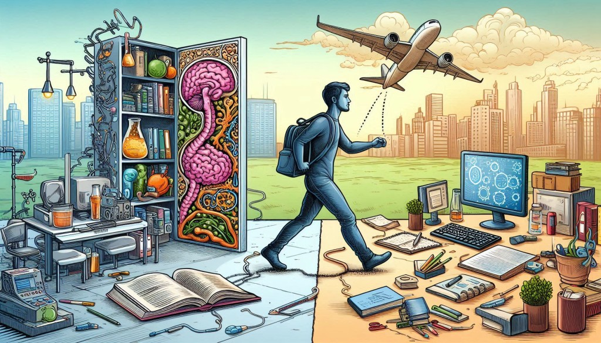

Hello, tech enthusiasts! Welcome to my blog, where I share my journey from being a biology student to a budding developer. This path has been filled with incredible learning experiences, challenges, and moments of sheer joy. Here's my story.
I began my academic journey in the field of biology during my Higher Secondary Certificate (HSC) education. Little did I know that my path would soon take a dramatic turn. After completing my HSC, I secured a seat at PET Engineering College. It was a new world for me, transitioning from the life sciences to the realm of computer science and engineering.
In my first semester, I encountered the programming language Python. My Python teacher played a pivotal role in shaping my understanding of programming. Her guidance and support ignited my passion for solving various problems through code.
Second Semester: I was introduced to C programming, which laid the foundation for understanding low-level programming concepts.
Third Semester: I delved into Java and data structures,further expanding my programming knowledge.
While many of my classmates pursued internships, I opted for an online course through the Naan Mudhalvan scheme, a Tamil Nadu government initiative to upskill college students. This experience introduced me to HTML, CSS, and JavaScript, setting the stage for future projects. A big thanks to our Chief Minister, Mr. M. K. Stalin, and the officers involved in this initiative!
In the fourth semester, I learned about algorithms and DBMS, gaining basic knowledge of MySQL. I created a simple Java program for a GPA calculator, using online compilers like OnlineGDB and Programiz. It was a straightforward program that provided output on the screen based on text input.
In the fifth semester, I got my own laptop, which fueled my curiosity to explore and create new applications. I decided to make my GPA calculator more attractive and interactive. Using HTML, CSS, and JavaScript, I developed a GPA calculator webpage. Realizing the need to share it with my colleagues, I used Android Studio to convert it into an app. The positive feedback from my teachers and friends motivated me to pursue more innovative projects.
During the sixth semester, we were tasked with a mini project. I decided to develop a Student Information System (SIS) using Python Flask. With no prior knowledge of Flask, I turned to YouTube and online resources to learn the basics. I implemented the core concepts and connected the system to a MySQL database, successfully completing the SIS project by the end of the semester.
One day, while playing Bingo with friends, I had an idea: why not create a digital version of this game? I started building a Bingo game, which is currently in development. This project has been a fun and engaging way to apply my skills and creativity.
From a biology student to a developer, my journey has been a blend of learning, experimentation, and growth. Each step has taught me valuable lessons and opened new horizons. I look forward to sharing more of my experiences and projects with you in future blog posts.
"Every great developer you know got there by solving problems they were unqualified to solve until they actually did it." — Patrick McKenzie
Thank you for reading! Stay tuned for more insights and stories from my development journey.